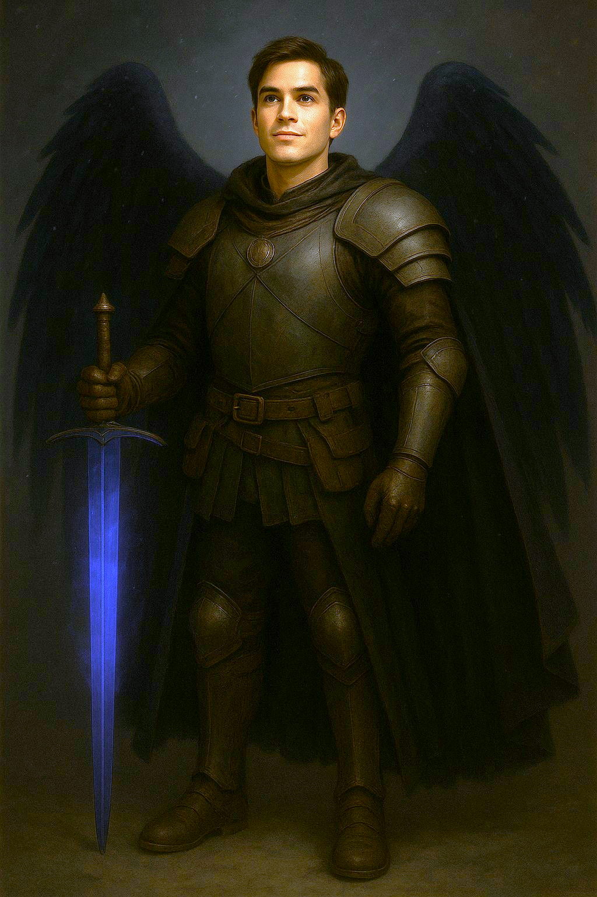

ABOUT ME

👋Prologue
Hi! I'm Gabriel—a web development student with a story shaped by resilience, curiosity, and a deep desire to build something meaningful. My journey into tech began thanks to a generous friend, Dillion, who gifted me a Python course on Udemy.
That single act opened the door to a new world—far removed from the labor jobs I’d worked for years. Dillion didn’t just hand me the keys; he stuck around to help me through the tough parts, and I’ll always be grateful.
Since then, I’ve been diving headfirst into the world of IT, learning to code, solve problems, and create digital experiences that reflect my creativity and determination.
🎓Education
- High School Diploma
- CNC Certification
- BlackJack Dealer Certified
- Associate’s Degree in Theatre
- Forklift Certified
- Currently enrolled in Web Development
- Ongoing self-study via Udemy, freeCodeCamp, and other platforms
🏆Accomplishments And Achievements
- Earned a 2nd Degree Black Belt
- Became a homeowner
- Moved to a new state
- Lost 70 pounds—twice
- Traveled to Japan
- Recovered from knee surgery
- Born dead—but I came back fighting
💪Hard Skills
- HTML5 Semantic Tags
- CSS Flexbox
- VS CODE
- Python (beginner/intermediate)
- Git & GitHub
- Responsive Web Design
- Basic SQL & Database Concepts
🧠Cognitive & Analytical Skills
- Problem-solving & perseverance
- Thinking and research
- Creative thinking
- Quantitative skills
- Strategizing
- Decisive
👥Communication & Collaboration Skills
- Team collaboration
- Well spoken and articulate
- Well written and concise
- Visual communication skills
- Public speaking
- Presentations
- Phone presence
- Persuasive
🏋️♂️Personal Growth Skills
- Willingness to learn
- Quick learner
- Takes initiative
- Motivated
- Adaptable
⏱️Organization & Productivity Skills
- Time management
- Multi-tasking
- Prioritization
- Detail-oriented
- Brilliant organization
- Works well under pressure
🌟Character & Interpersonal Skills
- Leadership
- Ethical
- Dependable
- Attentive
- Perceptive
- Personable
- Punctual and prompt
🎮Passions & Hobbies
When I’m not coding, I’m immersed in worlds of imagination and strategy. I love:
- Playing Dungeons & Dragons, video games and tabletop games
- Reading manga, comics, graphic novels, and books of all kinds
- Collecting figures, statues and other Geek/Nerd Paraphilia
- Watching Vtubers and Streamers
These hobbies fuel my creativity and help me think outside the box—skills I bring into every project.
🎯Career Goals
- Build a strong foundation in full-stack development
- Contribute to open-source projects
- Land my first role in tech as a junior developer
- Eventually specialize in game development or front-end design
- Inspire others who are starting from scratch—just like I did